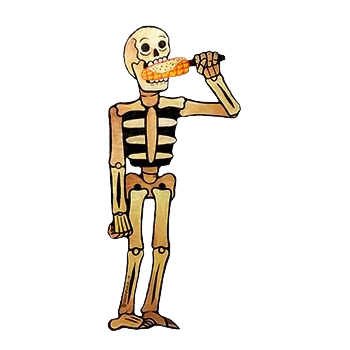
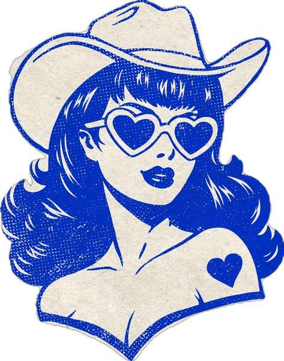

Corazones
Accesorios inspirados en milagritos y símbolos tradicionales.
Joyería y accesorios con raíces mexicanas, llenos de color, historia y pasión.
DescubrirPiezas únicas que celebran la cultura mexicana.

Accesorios inspirados en milagritos y símbolos tradicionales.

Joyas que reflejan la vitalidad de nuestras fiestas y artesanías.
Diseños con historia, herencia y orgullo de México.
Corazón de melón nace de la pasión por la joyería y el amor a las tradiciones mexicanas. Cada pieza es un homenaje a los colores, símbolos y recuerdos que nos unen.
¿Quieres una pieza especial? Escríbenos.